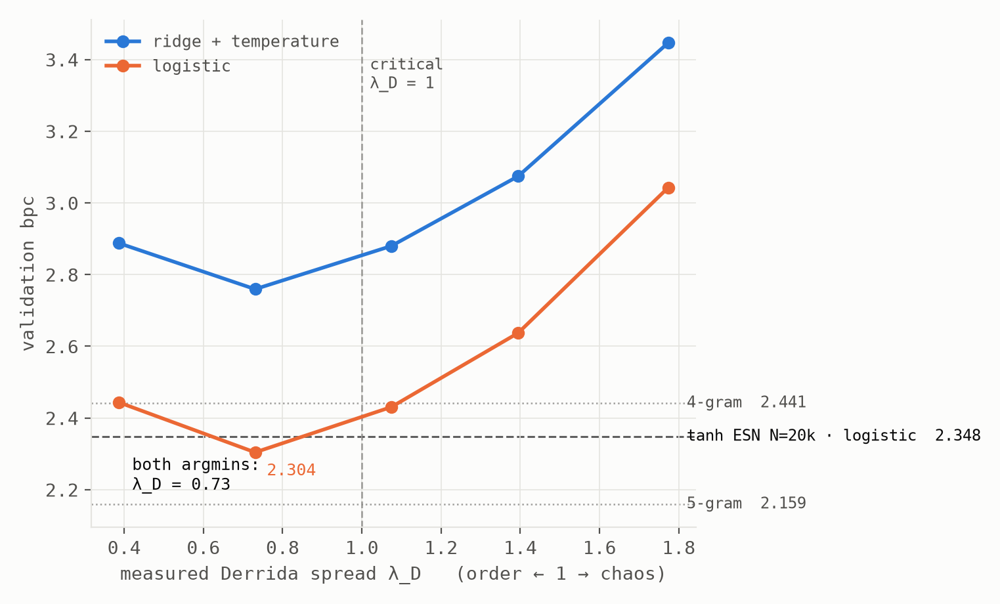
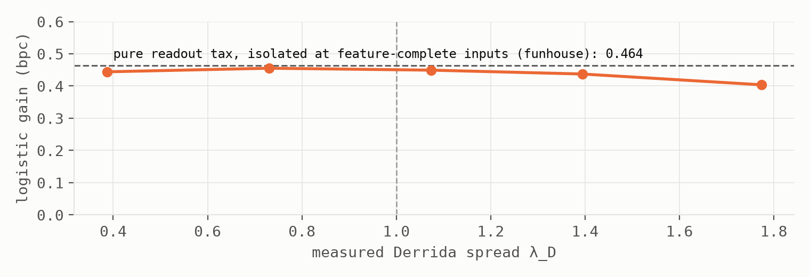
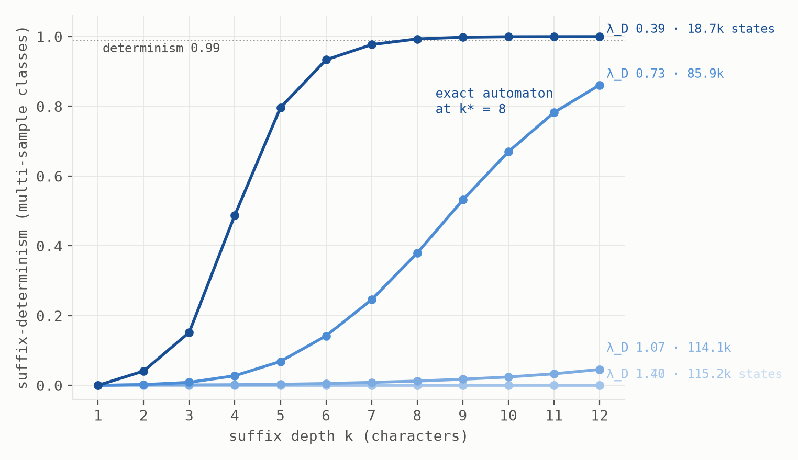

cd ~/experiments/tiny-actors && less note.txt
A Thousand Tiny Actors
Language modeling without arithmetic: a random automata ensemble, a pinned optimum, and a champion that is mostly a lookup table
Abstract. We build a character-level language model whose dynamics contain no arithmetic: one thousand actors, each holding one of eight discrete moods, each consulting a personal random rule table over its own mood, three neighbors' moods, and the current character. Only a readout is trained, on identical text8 splits and readout code as the companion notes. Five results. (1) A control dial for criticality must heal rather than persist: biasing rules to keep the current mood cannot reach the ordered phase (a perturbed actor faithfully keeps its perturbation; the measured Derrida spread floors at ~1.5), while biasing toward a fixed home mood sweeps cleanly through the transition. (2) Under a ridge readout the bpc optimum is strictly subcritical (λ_D = 0.73) — the interior-optimum result of the companion note, reproduced in the substrate where "edge of chaos" was coined. (3) Under a logistic readout the optimum does not migrate toward criticality — it is pinned at the same cell, and the logistic advantage is flat (0.40–0.46 bpc) across the entire dial, numerically matching the pure readout-calibration tax isolated in the funhouse note. The interference relief that moves reservoir optima has nothing to relieve here: discrete mood storage is crowding-free. (4) The best cell reaches 2.304 validation bpc with 2.2×10⁵ trained parameters — ahead of every tanh reservoir of comparable and larger size at the same data budget. (5) Deep in the ordered phase the ensemble is exactly a finite-state machine: state determined by the trailing 8 characters, 115,200 samples collapsing to 18,741 distinct states, with 2,336 states shared across suffix classes — partial automaton minimization by physics, as in the companion note's max-plus reservoir. The champion itself is 86% suffix-determined at depth 12: the best model in this program's weight class is mostly a lookup table.
§1 The machine and its dial
N = 1000 actors each hold a mood s_i ∈ {0…7} and watch m = 3 fixed random neighbors. Every step, all actors update synchronously by personal random rule tables — heterogeneity is the point; there is no shared law, no metric, and no arithmetic anywhere in the dynamics:
s_i(t+1) = rule_i( s_i(t), s_{n1}(t), s_{n2}(t), s_{n3}(t), c_t )
The character c_t is the prompt the whole stage hears. The trained readout sees only the moods (one-hot, N·k = 8000 features): ridge to one-hot targets with validation-fitted temperature, or multinomial logistic — the companion notes' readout code, unchanged. Criticality is measured, not assumed: λ_D is the mean one-step Hamming spread from a single flipped actor, post-washout.
The dial itself taught the first lesson. Our first bias — with probability β a rule entry keeps the actor's current mood — looks like a calm knob and is not one: a perturbed actor's "keep your mood" faithfully keeps the perturbed mood, so persistence preserves mistakes and the spread cannot fall below the self-persistence floor (measured λ_D = 1.54 at β = 0.9; the ordered phase is unreachable by construction). The working dial is typecasting: each actor has a fixed home mood that biased entries return to, so perturbations heal regardless of what they were. Measured λ_D then sweeps 3.41 → 0.39 as β runs 0.3 → 0.95, crossing criticality between β = 0.8 and 0.9. Stubbornness is not stability; order requires a restoring force, not inertia — the discrete cousin of the echo-state property.
§2 The edge, in its birthplace
Random automata networks are where the edge-of-chaos hypothesis was born. The companion note found that language reservoirs tuned under a ridge readout reject the edge; the same experiment here — five cells straddling the measured transition, 2×10⁶ training characters each — reproduces it in the original substrate: validation bpc has an interior optimum at λ_D = 0.73, strictly inside the ordered phase, with both flanks rising (Fig. 1). The best stage keeps its actors mostly in character.

| model | val bpc | test bpc | trained params |
|---|---|---|---|
| 3-gram | 2.928 | 2.934 | ~2×10⁴ |
| troupe, ridge, λ_D=0.73 | 2.759 | 2.766 | 2.2×10⁵ |
| tanh ESN N=5k, logistic | — | 2.448 | 1.4×10⁵ |
| 4-gram | 2.441 | 2.436 | ~5×10⁵ |
| tanh ESN N=10k, logistic | 2.347 | — | 2.7×10⁵ |
| tanh ESN N=20k, logistic | 2.348 | — | 5.4×10⁵ |
| troupe, logistic, λ_D=0.73 | 2.304 | 2.318 | 2.2×10⁵ |
| 5-gram | 2.159 | 2.186 | ~1.4×10⁷ |
| tanh ESN N=50k, logistic (the program's leader) | 2.174 | — | 1.35×10⁶ |
The headline row: a thousand actors holding three bits each, wired by lookup tables, outscore tanh reservoirs holding ten and twenty thousand floating-point units at the same data budget — with fewer trained parameters than either. Caveat stated plainly: single seed on both sides of that comparison; the margin over N=10k (0.043) is several times the pond program's seed noise (±0.01) but a seed replication is the obvious next chore.
§3 The pinning: memory without crowding
The companion note's sharpest result was that its reservoir optimum migrates under a better readout: ridge prefers ρ = 0.6, logistic leaps to 0.95, because most of the high-memory penalty was interference a richer reader could relieve. The troupe refuses the move. The logistic argmin sits at the same λ_D = 0.73 as ridge (grid caveat: migration inside (0.73, 1.07) would be invisible), and — the sharper diagnostic — the logistic advantage is flat across the entire dial: 0.40–0.46 bpc everywhere, where the reservoir's gap grew five-fold with ρ (Fig. 2). Flatter still: the gap sits numerically on the pure readout-calibration tax (0.464 bpc) that the funhouse note isolated on provably feature-complete inputs.

Reading: the reservoir pays two taxes — readout calibration, plus interference from memories superposed in a shared continuous state — and the second is what a better reader relieves, moving the optimum. The troupe appears to pay only the first. Its moods are discrete; nothing is graded, nothing superposes, so there is no crosstalk for a better reader to untangle and nothing to migrate for. Crowding-free memory — and §4 supplies the mechanism.
§4 The crystal: mostly a lookup table
Group sampled stage-states by the trailing k characters of input (115,200 samples per cell; only suffix classes with ≥2 samples count, exact 1000-actor vector equality required; a shift-by-one alignment control scores far below the aligned version, 0.615 vs 0.993). Deep in the ordered phase the ensemble is not approximately suffix-determined — it is exactly a finite-state machine (Fig. 3): at λ_D = 0.39, determinism reaches 1.000 at k* = 8, the 115,200 samples collapse to 18,741 distinct states, and 2,336 of those states are shared by multiple determined suffix classes — the dynamics merging equivalent histories on its own, the partial automaton minimization the companion note found in its max-plus reservoir, here reproduced in a rule-table substrate.

Toward criticality the crystal melts continuously — 18.7k → 85.9k → 114.1k → all-distinct — the third substrate in this program to show the same discrete-to-fractal transition. And the two discretization routes differ mechanically: the max-plus reservoir's trajectories collide exactly in finite time (absorbing), while the troupe heals — differences die out under the typecast pull. A pre-registered mean-field form for that healing, det(k) ≈ exp(−D₀·λ_D^k), got the ordinal picture right (the champion should not and does not determinize by k = 12; the deep-subcritical cell should and does, k* = 8 vs. predicted 9.5) and the rate wrong in the favorable direction: measured determinism at the champion is 0.861 where the form predicts 0.023. Large perturbations heal far faster than the linearized Derrida rate — typecast pulls a wrong actor home regardless of its neighborhood, and λ_D, a small-perturbation growth rate, overestimates the survival of big differences.
The synthesis the title promises: the best model in this note — the one outscoring reservoirs five times its size — is 86% lookup table. It stores the recent past not by superposing it in a crowded continuous state but by healing into a configuration that stands for the recent suffix. That is why §3 found nothing to relieve: filing, not echo.
§5 Limitations and related work
Scope: one corpus (text8), character level, N = 1000 actors, k = 8 moods, one seed per cell (the pond-side comparisons in Table 1 are also single-seed at 2M characters); five dial cells, so migration inside (0.73, 1.07) is unexcluded; determinism results are within-sample (115,200 states) as in the companion note's automaton analysis. The λ_D = 0.73 optimum is a claim about these readout families and this budget.
Related work. Random Boolean networks and the Derrida annealed approximation: Kauffman; Derrida & Pomeau. Edge-of-chaos computation: Langton, Packard; computation at the edge in RBNs is the founding literature this note's §2 answers. Reservoir computing with cellular automata (ReCA): Yilmaz; Nichele & Molund — the nearest architectural antecedent, using uniform elementary CA rules; the troupe differs in per-cell heterogeneous rule tables, per-step symbol drive to every cell, a measured criticality dial with a healing (typecast) bias, and the geometry/determinism instrumentation. The interference framing and all baselines come from the two companion notes; the pure-readout-tax number is the funhouse note's. Fractal prediction machines and suffix-keyed state geometry: Tiňo et al.
Reproducibility: every run is seeded; result JSONs record full configurations; the lab journal contains each prediction's pre-registration text, including the copy-own dial's registered failure, the amended healing form, and both misses.